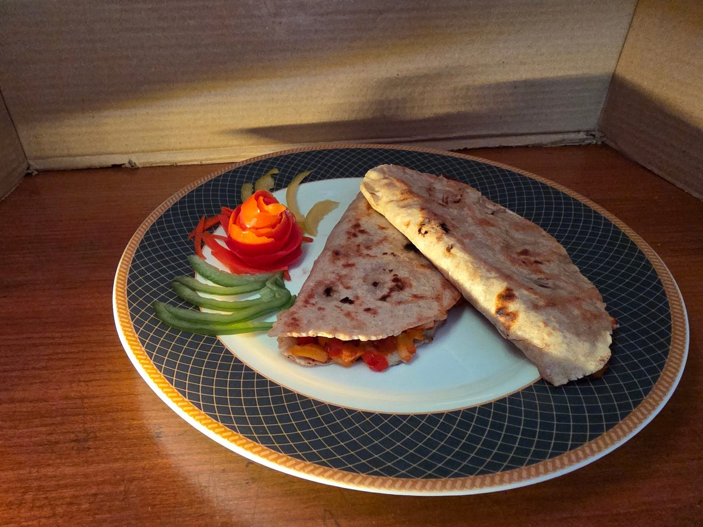
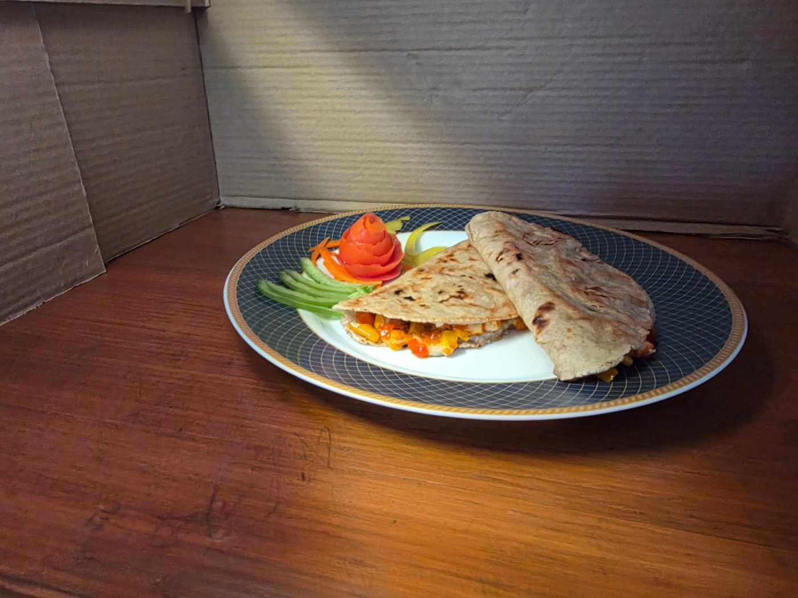

Quesadilla
A crispy, cheesy quesadilla stuffed with veggies and paneer.
0:00 / 0:00


Ingredients
Tap an ingredient to tick it off as you go.
- Gluten-free flour – 50 g
- Tri-colour capsicum – 50 g
- Corn – 35–40 g
- Carrot – 15 g
- Onion – 35 g
- Garlic – 1–2 cloves
- Paneer – 60 g
- Chilli flakes
- Olive oil
- Pizza seasoning
- Cheese – 50 g
- Sauce – 55–60 g
Method
- Gather all the ingredients.
- Dice the paneer.
- Chop all the capsicums.
- Cut the carrot.
- Chop the garlic.
- Dice the onion.
- Put all the flour into a bowl.
- Add a little hot water.
- Mix into a dough, adding more water if required.
- Knead the dough.
- Take half the dough and roll it into a flat bread/roti.
- Cook the roti on a griddle.
- Place a pan on the heat.
- Add oil.
- Add the garlic and toss it.
- Add the onions and fry for 2 minutes.
- Add the corn and carrot and fry for 2 minutes.
- Add the rest of the veggies and fry for a minute.
- Add the paneer and sauté it.
- Finally, add the sauce and seasonings.
- Take the roti and stuff the filling onto one half of it.
- Add cheese on top of the filling and spread it.
- Butter the griddle and roast until golden brown, flipping once.
- Serve and enjoy!